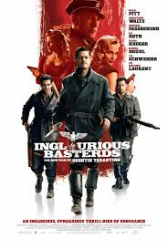
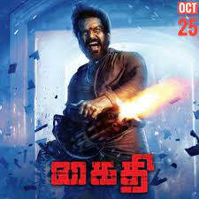

Guten Tag
Here's a list of movies that I think are pretty good
-
Inglorious Basterds

This Tarantino flick is packed to the brim with his signature over-the-top violence in the form of Nazi shootings, Nazi explosions and other innumerable ways to kill Nazis.
But don't think this is just some gory action flick, this is a Tarantino movie after all, the compelling narrative of Shoshanna, a girl that narrowly survives dying in the hands of SS soldiers gets her path crossed with the Nazis once again
courtesy of one Private Zoller, paired with the unbelievable ability of Christoph Waltz to totally steal any moment he is in as Colonel Hans Landa, makes this a must see for everybody.
-
Kaithi

This absoulte banger starring Karthi as Dilli in its lead role is a bit on the slower side to get into pace, but once it does, it definitely delivers.
The film starts off to a turbulent scenario, where literally all but one of the Trichy Police Department are knocked unconscious due to a feast being drugged by a mole ni the department. The film then follows Inspector Bejoy and ex-prisoner (kaithi) Dilli in their quest to get all these knocked out policemen to the nearest hospital in order to save their lives. But that quest is not without its fair share of difficulties, of course, as the pair are constantly interrupted by large hordes of thugs assembled under the order of Adaikalam, the overarching antagonist. The film contains a plethora of exciting twists that don't get boring even on the fifth watch, and so I highly recommend this movie.